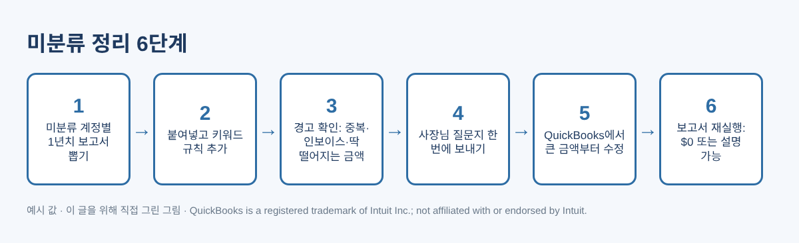
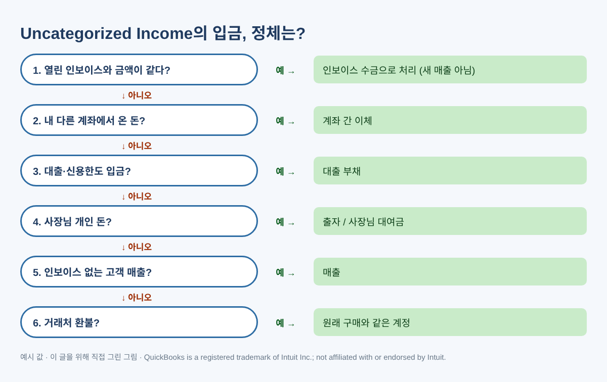
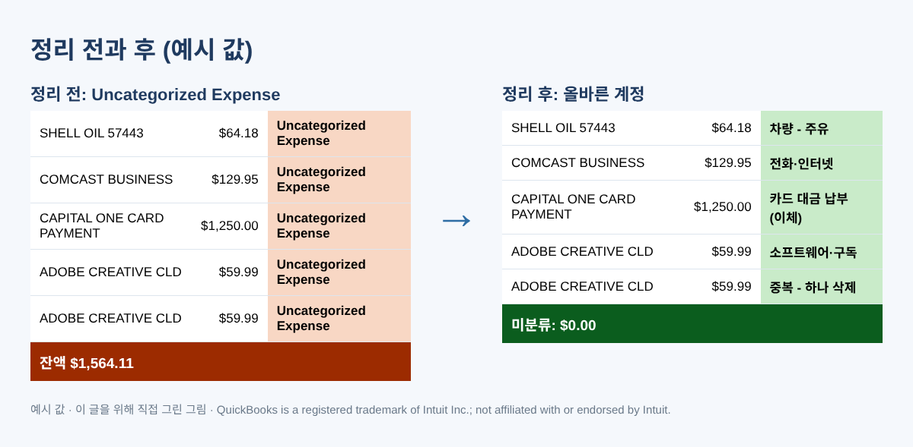
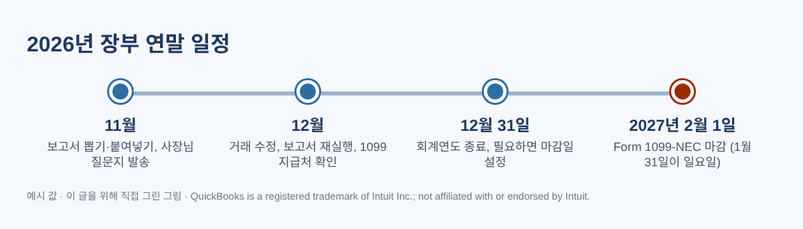

연말 전에 꼭 정리해야 할 QuickBooks 미분류 거래(Uncategorized·Ask My Accountant) 정리법
11월쯤 손익계산서(Profit and Loss)를 열어 보면 Uncategorized Expense나 Uncategorized Income이라는 줄에 생각보다 큰 금액이 들어 있는 경우가 많습니다. 대차대조표에는 Uncategorized Asset이, 오래 쓴 Desktop 파일에는 Ask My Accountant 계정이 보이기도 합니다. 은행 피드 거래를 계정 없이 추가하거나, 애매한 입금을 "나중에 보자" 하고 넘기거나, 파일을 가져오면서 계정이 비어 있던 거래들이 1년 동안 조용히 쌓인 결과입니다. 연말마다 회계 커뮤니티에 같은 질문이 올라오고, 답은 대개 "하나씩 보면서 고치세요"입니다. 맞는 말이지만 거래가 300건이면 막막하지요.
이 돈이 미분류에 남아 있으면 세금 신고서의 올바른 줄에 들어가지 못합니다. 실제 비용이 빠지거나, 개인 지출이 사업 경비처럼 보이거나, 고객 수금이 매출로 두 번 잡히기도 합니다. $3,000을 준 외주 업체가 1099 목록에서 빠지는 일도 생깁니다. 아래에서는 직접 만든 엑셀(또는 구글 시트)로 따라 할 수 있는 방법과, QuickBooks Desktop·Online에서 각 거래를 고치는 위치를 차례로 설명합니다.

1단계: 백업하고, 미분류 계정별로 보고서 뽑기
무엇이든 바꾸기 전에 Desktop은 회사 파일을 백업하고, Online은 현재 보고서를 저장해 두세요. 그다음 Transaction Detail by Account 보고서를 1년 전체 기간으로, 미분류 계정 하나씩 필터해서 뽑습니다.
- QuickBooks Desktop: Reports › Accountant & Taxes › Transaction Detail by Account › Customize Report. Display 탭에서 기간을, Filters 탭에서 Account를 골라 미분류 계정을 선택합니다. Excel › Create New Worksheet로 내보냅니다.
- QuickBooks Online: Reports에서 "Transaction Detail by Account"를 검색하고 기간을 1년 전체로 바꾼 뒤, 보고서 필터에서 미분류 계정만 남깁니다(화면 버전에 따라 필터 이름이 Account 또는 Distribution account입니다). Export › Export to Excel로 내보냅니다. Desktop만 써 오신 분은 메뉴가 왼쪽 세로 메뉴에 있다는 점만 기억하시면 됩니다.
남길 열은 Date(날짜), Type(유형), Num(번호), Name(거래처), Memo/Description(메모), Amount(금액)입니다. Source라는 열을 하나 만들어 어느 미분류 계정에서 온 거래인지 적고, 누적 Balance 열은 지웁니다.
2단계: 쉬운 60%는 키워드 규칙에 맡기기
미분류 거래 대부분은 주유, 전화, 소프트웨어, 은행 수수료처럼 매달 반복되는 거래입니다. 옆에 작은 규칙표를 만드세요. K열에 키워드, L열에 계정을 적습니다(예: SHELL → 차량 주유, COMCAST → 전화·인터넷). Name이 D열, Memo가 E열이라면 첫 행에 아래 수식을 넣으면 계정이 제안됩니다.
=IFERROR(LOOKUP(2,1/((ISNUMBER(SEARCH($K$2:$K$40,D2&" "&E2)))*($K$2:$K$40<>"")),$L$2:$L$40),"ASK OWNER")
키워드가 두 개 걸리면 표에서 아래쪽 규칙이 이깁니다. 그래서 구체적인 규칙(CARD PAYMENT)을 일반적인 규칙(TRANSFER)보다 아래에 두세요. 구글 시트에서는 수식 전체를 ARRAYFORMULA( )로 감싸야 합니다. 아래로 복사한 뒤에도 ASK OWNER로 남는 행이 진짜 질문거리입니다.
3단계: 경고 수식 세 개 추가하기
계정 제안만으로는 부족합니다. 금액이 F열, 날짜가 A열일 때 아래 세 가지 확인으로 비싼 실수를 잡을 수 있습니다.
- 중복 가능: =COUNTIFS($A:$A,A2,$D:$D,D2,$F:$F,F2)>1 — 날짜·이름·금액이 같으면 은행 피드 거래와 수기 입력이 겹친 경우가 많습니다.
- 딱 떨어지는 금액: =AND(MOD(ABS(F2),100)=0,ABS(F2)>=500) — $500, $1,000, $5,000은 구매보다 이체·대출·사장님 돈일 때가 많습니다.
- 큰 금액: =ABS(F2)>=2500 — 영수증을 받으세요. 장비 구매나 대출금이 여기에 숨어 있습니다.
Uncategorized Income에서 온 입금은 열린 인보이스에 같은 금액이 있는지도 꼭 찾아보세요. 열린 인보이스와 금액이 같다면 새 매출이 아니라 고객의 대금 결제입니다.
| 거래처 (예시) | 금액 | 출처 계정 | 제안 계정 | 경고 |
|---|---|---|---|---|
| SHELL OIL 57443 | $64.18 | Uncategorized Expense | 차량 - 주유 | — |
| ADOBE CREATIVE CLD | $59.99 | Uncategorized Expense | 소프트웨어 | 중복 가능 |
| ZELLE FROM CUSTOMER | $975.00 | Uncategorized Income | ASK OWNER | 열린 인보이스 확인 |
| DEPOSIT | $5,000.00 | Uncategorized Asset | ASK OWNER | 딱 떨어짐 + 큰 금액 |
| AMZN Mktp US (반품) | ($42.50) | Uncategorized Expense | 사무용품 | 환불: 원래 계정 사용 |
표 1. 2·3단계를 거친 예시 행입니다. 이름과 금액은 모두 예시입니다.
4단계: 사장님께 질문지는 한 번에
ASK OWNER만 필터하고 금액이 큰 순서로 정렬해 한 번에 보내세요. "주유", "개인용", "대출", "고객 인보이스 #1021"처럼 짧게 답해 달라고 하고, 큰 금액은 영수증을 받으세요. 은행 비밀번호나 전체 계좌번호는 필요 없으니 받지 마세요. 입금은 아래 판단 순서로 대부분 풀립니다.

| 이런 거래 | 보통 정체 | 보통 가는 계정 |
|---|---|---|
| 당좌 계좌에서 카드 대금 납부 | 카드 잔액 결제 | 카드 계좌로 이체 (비용 아님) |
| 사업 카드로 개인 물건 구매 | 사장님 개인 지출 | Owner Draw(인출)·배당 또는 주주 계정 |
| 대출 상환 | 원금 + 이자 | 대출 부채와 이자 비용으로 나누기 |
| 급여 대행사 출금 | 실수령액·세금·수수료 | 급여 보고서 기준으로 나누기 |
| IRS·주정부 세금 납부 | 급여세·사업세·개인세 | 부채·세금 비용·인출 — 통지서로 확인 |
| 개인에게 Zelle·Venmo 송금 | 외주·환불·개인 송금 | 외주비(W-9 받기)·환불·인출 |
표 2. 일반적인 경우입니다. 정확한 계정은 사업 형태와 담당 회계사의 계정 구성에 따라 다릅니다.
5단계: QuickBooks에서 한 건씩 고치기
QuickBooks Desktop
- 같은 Transaction Detail by Account 보고서를 QuickBooks 안에서 열고 행을 더블클릭합니다.
- 그 줄의 계정만 바꾸고 Save & Close를 누릅니다. 날짜·금액·은행 계좌를 그대로 두어야 은행 대조 결과가 바뀌지 않습니다.
- Accountant·Enterprise 버전은 여러 건을 한 번에 바꿀 수 있습니다. Accountant › Client Data Review › Reclassify Transactions에서 거래를 고르고 Account to에 체크한 뒤 새 계정을 골라 Reclassify를 누릅니다. Intuit 안내에 따르면 A/R·A/P를 쓰는 거래(인보이스·청구서)나 다른 거래에 연결된 거래는 이 기능으로 바꿀 수 없으니 한 건씩 여세요.
QuickBooks Online (Desktop과 다른 점 위주로)
- 보고서를 QuickBooks Online에서 실행하고 행을 클릭하면 거래가 열립니다. 그 줄의 Category를 바꾸고 저장합니다.
- 은행 피드로 들어온 거래는 Banking › Bank transactions에서 이미 추가된 거래가 모인 탭을 열고, 해당 행에서 Undo를 누른 뒤 다시 분류해도 됩니다. 엉뚱한 거래와 매칭된 경우에는 이 방법이 가장 깔끔합니다. 탭 이름은 버전에 따라 바뀌어 왔으니, 추가된 거래가 모인 탭을 찾으시면 됩니다.
- QuickBooks Online Advanced를 쓰거나 회계사가 QuickBooks Online Accountant로 접속하면 Settings(톱니바퀴) › Reclassify transactions(버전에 따라 Dimensions › Dimension assignment 아래)에서 여러 건을 한 번에 바꿀 수 있습니다. 계정 종류와 미분류 계정을 고르고, 거래 선택 → Reclassify → 새 계정 → Apply 순서입니다. Intuit가 밝힌 제한: 비용 거래의 은행 계좌는 여기서 못 바꾸고, 품목이 있는 거래는 Class만 바꿀 수 있으며, 급여 거래는 바꿀 수 없습니다.

6단계: 보고서 다시 뽑고 1099 대상 확인
보고서를 다시 실행했을 때 미분류 계정이 $0이거나, 한 문장으로 설명할 수 있는 작은 잔액이면 됩니다. 이어서 =SUMIFS($F:$F,$D:$D,D2)로 지급처별 합계를 내고 $2,000 이상인 곳을 살펴보세요. 2026년에 지급한 금액부터 Form 1099-NEC의 비직원 보수 보고 기준이 $2,000입니다(이전 $600). 신용카드·직불카드·결제 앱으로 지급한 금액은 결제 회사가 Form 1099-K로 보고하므로 1099-NEC 대상이 아닙니다. 1099-NEC 마감은 1월 31일인데 2027년 1월 31일이 일요일이라 2026년 지급분 마감은 2027년 2월 1일입니다.

자주 하는 실수
- 인보이스가 열려 있는데 입금을 매출로 잡기. 매출이 두 번 잡히고 고객은 여전히 미수로 남습니다.
- 카드 대금 납부를 비용으로 잡기. 카드로 산 물건이 이미 비용입니다.
- 계정을 고치면서 금액이나 은행 계좌까지 바꾸기. 끝내 놓은 은행 대조가 깨집니다.
- 이미 신고한 연도를 수정하기. 올해 조정으로 처리할지 회계사와 먼저 상의하세요.
- 전부 "기타(Miscellaneous)"로 옮기기. 계정은 비지만 문제는 그대로입니다.
- 사장님께 스무 번 따로 묻기. 정렬된 목록 한 장은 답이 오고, 문자 스무 통은 답이 안 옵니다.
자주 묻는 질문
계정을 바꾸면 은행 대조(Reconcile)가 풀리나요?
수입·비용 계정만 바꾸면 대조된 금액은 그대로라서 대조 결과도 유지됩니다. 날짜·금액·은행 계좌를 바꾸면 달라질 수 있습니다.
분개(Journal Entry) 한 번으로 잔액을 통째로 옮기면 안 되나요?
합계는 옮길 수 있지만, 원래 거래는 틀린 계정에 남고 거래처별 보고서와 1099 합계도 고쳐지지 않습니다. 한 건씩 고치는 쪽이 느려도 깔끔합니다. 분개를 원하시면 회계사와 상의하세요.
Uncategorized Asset은 무엇이고 꼭 0이어야 하나요?
한쪽이 빠진 이체, 기초잔액, 계정 없이 들어온 입금이 모여 있는 경우가 많습니다. 은행·대출 명세서와 비교하고, 오래된 잔액을 자본으로 옮기기 전에는 회계사와 상의하세요.
사장님도 기억을 못 하시면요?
은행 명세서 이미지나 카드 영수증을 확인하고 한 줄 메모를 남긴 뒤, 추측하지 말고 세무 담당자에게 "확인 필요" 목록으로 넘기세요.
체크리스트
- 파일 백업 또는 보고서 저장
- 미분류 계정별 1년치 보고서 추출
- 반복 거래처 규칙 추가, 경고 확인
- 사장님 질문지 한 번에 보내고 답 받기
- QuickBooks에서 큰 금액부터, 계정만 수정
- 보고서 재실행: $0 또는 설명 가능
- $2,000 이상 지급처 1099-NEC 검토 (2027년 2월 1일 마감)
위 과정을 그대로 해 주는 미분류 거래 연말 정리 키트는 아래 무료 키트 다운로드에서 가입 없이 무료로 받으실 수 있습니다(엑셀 + PDF 가이드).
이 글은 교육용 정보이며 세무·법률·회계 자문이 아닙니다. 규정은 바뀔 수 있고 사업마다 상황이 다르니 담당 세무 전문가와 상의하세요. 표와 그림의 이름·금액은 모두 예시입니다. QuickBooks is a registered trademark of Intuit Inc.; not affiliated with or endorsed by Intuit. (QuickBooks는 Intuit Inc.의 등록 상표이며, 이 글은 Intuit와 제휴·보증 관계가 없습니다.)
출처
- IRS — Instructions for Forms 1099-MISC and 1099-NEC (Rev. December 2026)
- Intuit — Reclassify or move multiple transactions (QuickBooks Online)
- Intuit — Accountant tools: Reclassify your client's transactions (QuickBooks Desktop)
- Intuit Community — How to clear my uncategorized asset account
무료 키트 다운로드
글에서 설명한 내용을 그대로 따라 할 수 있는 도구입니다. 가입 없이 바로 받으세요.
- Excel 계산 도구 (.xlsx)Uncategorized_Cleanup_Workbook_2026_EN_KR.xlsx · 119 KB
- 단계별 가이드 (PDF)Uncategorized_Cleanup_Guide_2026_EN_KR.pdf · 443 KB
본인과 본인 사업에 무료로 쓰세요. 재판매·재배포는 하지 마세요. 일반 정보이며 세무·법률·회계 자문이 아닙니다. 숫자는 본인 자료로 꼭 확인하세요. QuickBooks는 Intuit Inc.의 상표이며 BIZLEX는 Intuit과 관련이 없습니다.